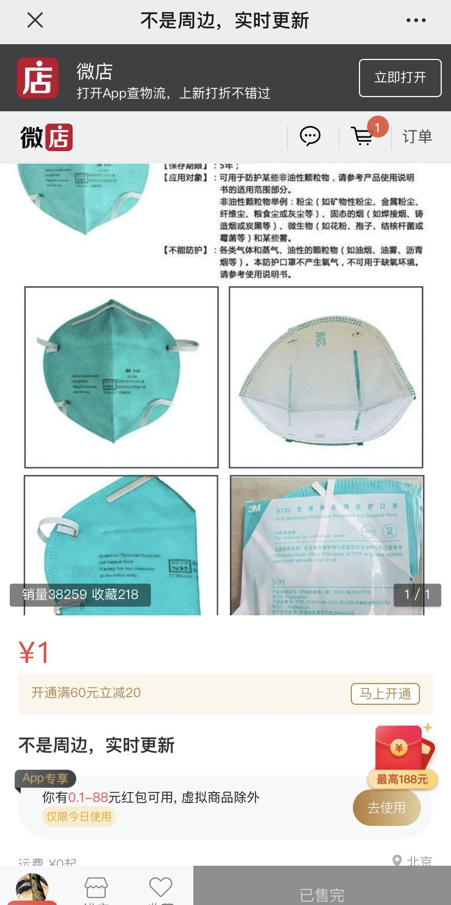
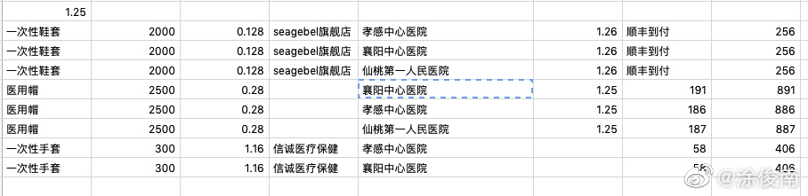
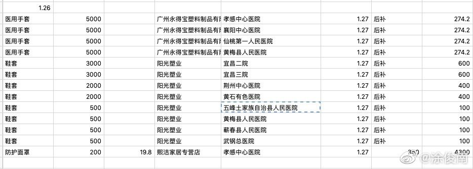
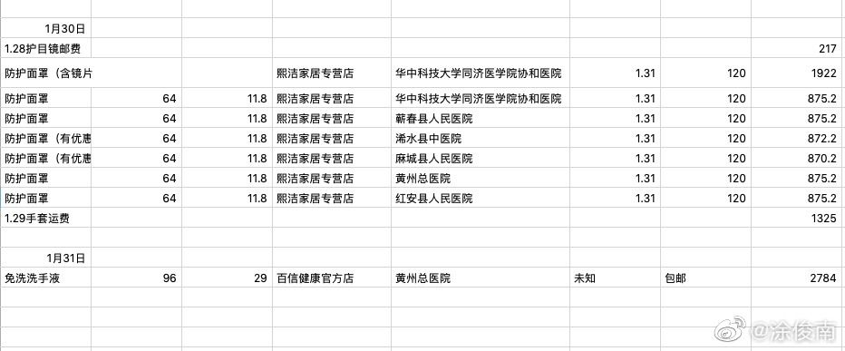

系列报道 | 一个摇滚乐队主唱发起募捐，他随后经历了一些胜利、一些波澜和一些释怀
原文链接 备份链接 这是疫情信息笼罩的第三周。疫区之外，很多人足不出户，长时间坐在电脑前。屏幕里是层出不穷的求助，家破人亡的悲剧，一出又一出的荒诞和不义。线上线下的割裂感让人无法心安理得地享受自己现有的安全。除了让自己沉浸在悲伤、愤怒和强 …


涂俊南（大家喜欢叫他小涂，乐队 “丢莱卡” 的主唱）的捐助日志在大年三十那天晚上出现在朋友圈。如往年，他没回去跟家里人过春节，独自留在北京。他原本计划三月份回去南昌陪陪父母，因为疫情爆发，今年大概是回不去了。
一个人在家，他也没空关心除夕夜里的高唱团圆和万家灯火。“搞点东西” 的七个核心成员都在忙着，这个由摇滚乐迷们自发组成的援助组织抢在武汉封城的第二天，发出了他们送往湖北的第一笔援助物资：500 个医用一次性口罩，1800 个医用橡胶手套，100 副护目镜，收件方是华中科技大学协和医院。
电视里 2020 年春晚《难忘今宵》的照例响起，社交媒体上持续增长的疫情讯息唱着反调。农历大年二十九早晨十点，武汉率先变成一座孤岛，接连着湖北省内的其他县市宣布封城。疾病和死亡在身边发生，除夕夜里，起码湖北的五千多万人们没谁关心电视机屏幕上放着什么。
小涂的微博上常帮忙转一些求助帖，大都是乐迷们 @涂俊南，配文 “小涂帮帮忙”。“搞点东西” 也是这么开始的。
“发起者里面有一个丢莱卡的乐迷，想问我能不能帮忙微博转发，我就被拉进群了”。小涂发现群里素未谋面的朋友们渴望为疫区送去支援，但方法上缺乏规划，空有热情似乎不够。福来，哥特，考拉，OA，小田，阿泽，小涂，七个人互不相熟，都是 “网友”；但疫情紧张，事不宜迟。小涂觉得必须得有个合理成型的工作方法，开始直接参与物资筹集和捐助的组织工作。
他们需要找到合适自己的方式 —— 毕竟七个人能力有限，而且阳历一月末已经开始面临物流放假、物资售罄的局面，捐钱轻易，但物资难购。他们担心出现大批善款在手中却买不到物资，最终选择了 “先找货源和物流，确定需要的款项，再以一元购买链接在微店众筹善款” 的方式。
”我们不预先筹款，所以资金流不会很大，” 小涂说，“好处是每笔钱都是花出去的，每一笔都可以查。我们也会选择地方上医疗资源比较匮乏的小医院来援助。”
这个模式可行。他们与友邻志愿小组的朋友们共同寻找还能生产发货的供货商，互相分享信息；同时有一个 500 人的微信大群，里面都是些热心的陌生人或乐迷朋友，多年演出抢票经验让他们摆出 “抢早鸟票” 的架势，抢购发在群里的 “一元链接”，小涂说 “有时候七八千的链接半分钟就抢完了。”
我尝试跟众多乐迷拼拼手速看是否能 “抢票成功” —— 失败了。光是填了个收货地址的功夫，再回到页面就显示 “已售罄”。我的地址为了节省时间，输入的是最简单的，精确度只到朝阳区，打字也就两分钟。
这单我没抢到。
小涂笑说这个 500 人的大群里大家常开玩笑：“还没售罄，冲冲冲！”、“主办方傻X！” ，乐迷抢票的 “行业黑话” 占领了这个因为热情和爱心而汇聚成的群聊，也算是苦中作乐。
 来看看 “搞点东西” 的 500 人大群里大家是如何 “抢早鸟票” 的。图片来自涂俊南
来看看 “搞点东西” 的 500 人大群里大家是如何 “抢早鸟票” 的。图片来自涂俊南

受限于物资购买的体量，“搞点东西” 一直没开二群，援助行动之前一直在那个 500 人的群聊中。“有五百位热忱、稳定的朋友支持完全够了”。
但因为物资统一调配、物流问题等种种原因，援助湖北地区变得不再容易。自 2月 2 日我读完小涂的捐助日志后，接下来的几天里，日志一直未见更新。如他所言，我们也清楚地知道：遇到困难了，事情没有进展。全国返工的时间一再延迟，湖北把控愈严，手机里各个群聊都是小道消息，真真假假。我问小涂之后的打算怎么办，他说 “我们可能要转换个方向”。
在 2 月 8 日的夜里，一条新的微店售卖链接终于再次出现在朋友圈。凌晨三点多，小涂也终于再次更新了捐助日志，带着显然被屏蔽多次的抱怨，“捐个东西怎么捐的我抱头鼠窜”。关键字地名已经不能在微博正文中出现，他只得换成大家可以意会的代号。我一边欣慰，一边觉得无奈，这只是一篇捐助日志而已。
这五天里，他们决定开 “搞点东西二群” ，并且转换捐助目标至湖北周边，疫情同样需要被关注的省份，比如河南、安徽和江西。同时，他们也做资源和信息的对接，把体量更大的物资同步给友邻小组，同时也为有能力提供大量捐款的朋友们提供渠道。
截止 2020 年 2 月 8 日，“搞点东西” 乐迷组织已经筹集并切实使用善款 43630 元，用于购买：口罩、医用手套、护目镜、防护面罩、免洗洗手液、鞋套等医用物资，顺利发往华中科技大学同济医学院协和医院、孝感中心医院、襄阳中心医院、仙桃第一人民医院、宜昌二院、宜昌三院、荆州中心医院、黄石有色医院、五峰土家族自治县人民医院、黄梅县人民医院、蕲春县人民医院、武钢总医院、孝感中心医院、襄阳市中心医院、浠水县中医院、麻城县人民医院、黄州总医院、红安县人民医院、广水市第一人民医院和随州中心医院共 19 家医院。
这个数额或许并不大，在如洪水猛兽般蔓延的疫情中约是杯水车薪，但是一颗火种也能让人望得见光，感受到热量。小涂把他们的捐助细节都记在了捐助日志里。我摘取了这些日志的片段，它记录着一个微弱但充满光和热的火种是如何慢慢前进，又是如何在每况愈下的现实面前，扛住心里的叹息和失望，把热情迸发最初时的善意，坚持下去。
涂俊南的捐助日志（节选）
1 月 24 日
今天是小组召集成立的第一天，大部分时间花在内部讨论确定捐赠流程、模式与搜寻货源上。汇集今日信息，总结各方经验，我们希望能给其他想要做点什么的人提供参考，给深陷新型冠状病毒疫情和恐慌中心的同胞一些支持。
我们七人确定了分工，包括收集汇总信息、直接与厂家联系、支付购买、记账、信息管理、宣传召集。确定了具体工作方案（包括作为自发的民间组织，如何有效合理筹款）。我们的流程是：网络确认物资需求-联系医院确认能否接受社会捐助-打电话联系厂家-购买下单-在群内公示金额筹款。
因为我们不是官方或正式的机构，所以每笔筹集的资金都是根据实际需要的货物金额，在群内收。为控制金额上限且大家都有机会帮忙，我们最后决定用微店下单付款的方式（我用了自己乐队的微店，上新商品，单价一元，库存上限为总金额），这样也好后期直接从后台复制公示。

1 月 25 日
口罩和防护服已经基本收由国家调配，这是好事，于是我们重点放在了其他物资上。比及口罩、护目镜、防护服这种最最紧缺的，像鞋套、手套、医用帽这些物资相对好找一些，它们也同样被急需。由于被提醒消毒液和酒精很难运输，我们也没有条件，就先放下了这两项。
今天除了逐渐提升的捐助量，还和其他一些民间自发组织建立了联系。借鉴他们的工作方式，且在资源和消息上互通有无，一定程度上避免了一窝蜂做同一地、同一项，大家的重点都能更清晰一点。

1 月 26 日
虽然只是第三天，从一个完全自发的志愿小组的角度来讲，我们观测到的情况变化不可谓不大。许多小组都在吃灰。口罩、防护服之类的核心物资越来越难找了，包括我们和其他几个小组都遇到了很多不了了之的单子。我们都觉得，这次本打算做持久战的志愿工作或许不多久就要到头。无依无凭的民间支援于情于理都只是补充存在，但只有到不得已时行动才能停下，在那之前，有多少做多少，毕竟总有太多不被恩泽的角落。
经过了三天，我们基本确定现在的模式是可行的，虽然慢且小，至少稳定有效。除了襄阳、孝感、仙桃，我们今天还试着与八家更小的医院取得了联系，寄了一部分鞋套，明天将继续为它们收集其他物资。今天是我们经手总金额最大的一天，有一万多，没想到参与筹款的大家第三天热情愈发高涨，很感动也很受鼓舞。希望无论时局如何变迁，人群如何割裂，这份愿意无条件为苦苦泅水的同胞做些什么的心意不变。别闭上红掉的眼睛，就算只有一点点也尽量做些事吧。尽力量力，别急着灰心。

1 月 28 日至 29 日
所有非常时期都是正常时期，所有正常时期都是非常时期。攒住劲。
包括我们小组在内，面向湖北的民间捐助进度都慢了下来或已经停滞。物资越发难找，我们都不同程度遇到了前期资源不合格、物流不畅的状况，加上有许多人在恶意抬价和销售伪劣物资，这两天的工作也相应谨慎了些。
我们不得不承认，热情有（主动或被迫地）衰退的趋势。越来越多的悲剧和越来越少能做的事情，习惯了在公共事件中按下转发键带来的虚假参与感的年轻人们，好像又一次要让最初的能量溜走了。这里没有要批评谁的意思，我认为这在今天非常正常。至少我自己也是这样。
可是诸君，瘟疫是不会这么快消退的，无论它这次有没有触碰到自己，它都在浸泡我们。如果不做好愚公移山的准备，我们大有可能会在它们终结之前就淡忘、习惯它们，热情退却后，只有真切受苦的人继续死掉。
“热情” 是这样的，它作为一个起点无疑是好的，持续则难。如果没有来自深处坚信的价值（需要真正的自我改造），指望热情长期支撑我们行动，只有节节胜利的变现来哺乳，而这在大多数情况下都不可能。不用去怀疑任何参与积极行动的人开始的动机，这也是对于 “想要世界变好一点” 这种初心的不忠诚。人当然会有低落和怀疑的时候，甚至是大多数时候。要学会承认这一点，但不可以把它作为一锤定音的答案。

1 月 30 日至 31 日
同期前后几天开始捐助的志愿小组这几天都停了，或者有停下的打算。不过也有很多新出来的志愿组织，有接力持续向湖北输送的，也有救助本地医院的，很感动。民间志愿组织还是要互助，接触到的信息相对多，应该尽力向身边的人传达。
我们的捐助已开始一周有余，大家或多或少出现了一些后劲不足的情况，不免都有些担忧，但我个人觉得还好。随着复工复课，大家自然会慢慢地抽远，一点点慢下来是正常的，持续发力就好。大家都量力而行才能持之以恒。

2 月 1 日至 2 日
这两天做成得不太多，大家都不同程度地疲了，加上找物资和物流上的难题 —— 很多时候都需要拿到医院出具的 “请货函” 或其他证明文件，厂家才能发货，路上也好放行。
这三天一共购入了三批物资，分别是免洗洗手液、防护服和护目镜，三批物资都捐给了黄州总医院。另外我们 1 月 29 日购入的医用手套，除了蕲春县人民医院，其他六所医院都已经收到了。如果之后大家看到我没有更新这天的捐助日志，那很可能是因为这天实在没什么进展，我们挪到后面合起来写了。无论发生什么，写得多或者少，这个捐助日志作为公示都会持续发下去，不会无声无息地停下的，直到一切都过去或实在做不下去的那一天。谢谢各位，请继续监督、提醒、发力。

2 月 3 日至 8 日
因为想尽量做到每笔钱落到实处，也是担心这次行动和许多事一样雷声大雨点小，1 月 24 日我们拉满第一个筹款群之后就没再拉过新群，想先把力量集中到能有效利用的范围。但这件事我们不能让它停在 “自然而然地消逝” 中，这里没有什么是真正 “自然” 的。我们想要把它做成一件真正长线的事情，用我们的方式，至少在民间援助这一点上尽可能和所有人一起走到最后。
想要再拉一个群，并非出于扩大声量、想 “干一票狠的” 考虑，反而是出于上面提到的初心和原则。因为我们想要打真正的持久战，在更长的时间维度来看，人数不变，负担落到现有的人头上的就都沉重了些，这是不利于持续的。
 文中所有图片均来源于涂俊南
文中所有图片均来源于涂俊南
所以，如果你有心愿意持续密切关注事态，细水长流地参与我们的物资捐助活动，可以加入我们的二群。是摇滚乐迷最好，不是也根本没任何所谓。在筹钱之外的时间，各位也可以帮我们一起找合适的物资，或者开始发起自己的行动。
对疫情的抵抗可能还需要坚持很久，但从一开始，就做好了要坚持到最后一刻的打算。“和最初一样，我们并不打算做成出什么了不起的大数额、大动作，只想作为普通人在灾祸结束之前做到能做的事情：搞点东西。灾祸还没结束，那它就不应该停下。”
// 作者：涂俊南、jingya
// 编辑：Alexwood
在这次疫情中，你是否被迫改变了自己的生活习惯，你和周围的人产生了怎样新的关系，你获得了哪些观察和思考？如果你有想法想要分享，请发送电子邮件到 tougao@yishiyise.com，注明 “武汉呼叫”，我们的编辑看到后可能会与你联系。
2019 年年末的时候我们希望每个人都能在 2020 年更脚踏实地一点，而 2020 如此凶猛，当我们都困在这场灾难之中，每一个你身边的故事带来的感受或许都将指向我们的未来。虽然叫 “武汉呼叫”，但疫情影响的是我们所有人。无论你来自哪里，身在哪里，我们都想听到你的故事。


原文链接 备份链接 这是疫情信息笼罩的第三周。疫区之外，很多人足不出户，长时间坐在电脑前。屏幕里是层出不穷的求助，家破人亡的悲剧，一出又一出的荒诞和不义。线上线下的割裂感让人无法心安理得地享受自己现有的安全。除了让自己沉浸在悲伤、愤怒和强 …
原文链接 备份链接 医院人员领取志愿者送的医疗物资。受访者供图 文 | 李晓芳 编辑 | 胡大旗 新型冠状病毒肺炎疫情扩大后，湖北省内的医院医疗物资告急。从1月23日开始，很多医院自行发布物资募捐公告。几乎同一时间，各种民间力量行动起来， …
原文链接 备份链接 非常时期，武汉成了全国人民挂念、祈福的城市。封城后，武汉人民的真实生活是什么样？ 正和岛自1月26日起特别推出《叶青：我在武汉疫区的第N天》专栏。叶青是一位定居武汉40年的市民，也是一名学者和官员。接下来的一段时间，他 …
原文链接 备份链接 点击上方蓝字 _ 关注我们 _ 非常时期，武汉成了全国人民挂念、祈福的城市。封城后，武汉人民的真实生活是什么样？ 正和岛自1月26日起特别推出《叶青：我在武汉疫区的第N天》专栏。叶青是一位定居武汉40年的市民，也是一名 …
原文链接 备份链接 2月7日15时，国务院联防联控机制召开新闻发布会，介绍进一步做好重点地区疫情防控工作、提高收治率治愈率和降低感染率病死率等相关情况。现在建立了16个省支援武汉以外地市的一一对口支援关系，以一省包一市的方式，全力支持湖 …